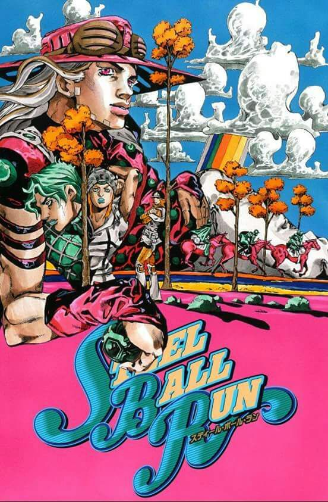

Released in 2004 and ending in 2011, Steel Ball Run is the 7th installment of JoJo's Bizarre Adventure by renound mangaka Hirohiko Araki. This new run is unique because it is seperate from the previous parts. This gives Araki a breath of fresh air with the world he's created. This time we're in the United States in the 1890's following Johnny Joestar, a former horse jockey who has lost feeling in his legs. Once he meets Gyro Zeppeli and his mysterious Steel Balls thast give him the temporary power to walk; he follows him across the country on the Steel Ball Run. Which is a cross country horse race for a grand prize of $50,000,000. They encounter multiple enemies and a possible government plot. The main villain of this part is someone who upholds justice, even stating that they are doing what is best for everyone, "My heart and actions are utterly unclouded! They are all those of justice." - Funny Valentine.
JoJo's Bizarre Adventure is a japanese manga and anime. With parts 1-5 being adapeted into an anime. Each part follows a Joestar, Part 1 has Jonathan Joestar, and skip to Part 6 we have Jolyne Kujo. Each part is different other than their protagonists, whether its set in Victorian England with vampires and zombies, trying to capture a serial killer in a small japanese town, Italian Mobsters, or a Florida prison break. JoJo has been going on since 1987, having each part be differetn is something that has definetly benefited Hirohiko Araki. Each part offers something new to the reader/viewer and makes sure that stories don't get boring or lose their way.
Comparing Steel Ball Run to other JoJo parts is quite common. Since there is a wide range of genres and themes, it is easy for there to be debate as to what is the best part objectively. Currently, Steel Ball Run is the best JoJo part in my opinion. There are a few holes in the story that leave the reader(and me) confused, but these aren't a problemn for the story as a whole. Steel Ball Run represents everything that JoJo has become and stands for.
I would certainly reccomend this if you have an affinity for animation or comics. It might be difficult for the western reader because manga are typicallly read from right to left, so there is a bit of adjustment. But once you get past that it becomes natural. Although you could read Steel Ball Run by itself. I would hghly encourage anyone to begin JoJo as whole by starting with Part 1. Steel Ball Run is genius in my eye. So I hope that you could experience it too.